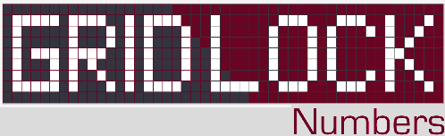

 | ||
HOW TO PLAYChoose your grid and fill it out completely with numbers, - only if you can. Start anywhere with 1 and continue filling numbers regarding two move constraints: 1. Leave double spaces for left, up, right or down moves.←↑→↓ 2. Single space for diagonal moves. |

A challenging puzzle game! Requires iOS 7.0 or later. Works on iPod Touch, iPhone and iPad. Find out more about the initial version here: APPADVICE |
TIPSTurn on the switch under the grids to see all possibilities of where the next number can go. You can undo your moves if you tap on the last number you put. SCORINGEach number worths 10 times its worth. Removing a number makes you lose an extra 1 point. 'x2' cells double the added numbers. |